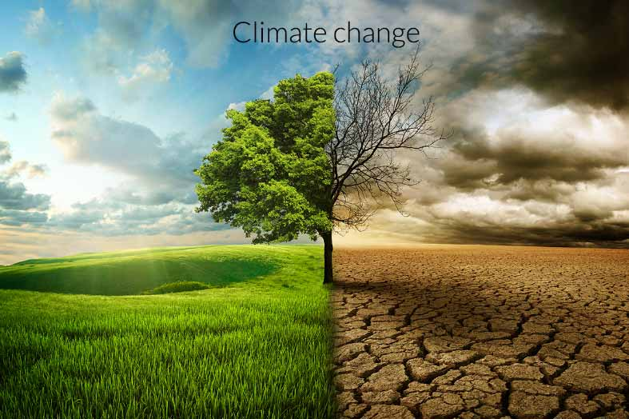
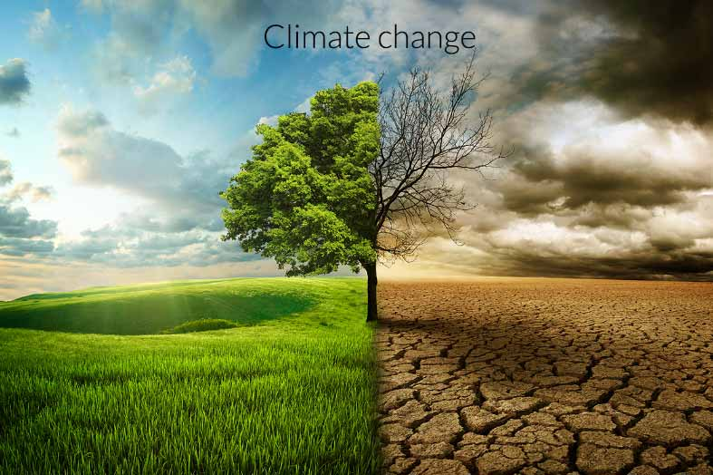

How do we love trees?
1. Conserve trees and forests in your area.
Forests and trees especially big trees and mature forests have many benefits. They provide habitat for a multitude of species, store carbon, maintain water quality, stabilize the climate, and provide places for people to recreate and connect with nature. Encourage your local government to conserve forests, create parks, and oppose destructive suburban sprawl and other developments. Volunteer with a local land trust or parks and recreation department, or consider a conservation easement if you own forested land.

2. Plant trees the more the better!
Reforestation is a critical part of the solution to climate change, and restoring previously degraded ecosystems provides essential habitat for threatened species. Plant trees in your community or donate to organizations that plant trees around the world. Keep in mind that planting trees should never be an excuse for destroying existing forests and, when you donate, make sure that your money goes toward restoring native ecosystems rather than planting timber monocultures destined for logging.

3. Support forest conservation organizations.
NGOs like the TREE Foundation, the Nature Conservancy, the Sierra Club, Center for Biological Diversity, and Rainforest Action Network offset deforestation and conserve threatened ecosystems around the world. In the absence of effective and environmentally-friendly governance in many areas, NGOs provide important organizational and monetary support for a variety of conservation efforts. Find a reputable conservation charity that speaks to you and send them a tax-deductible donation. Or find a local forest nonprofit and volunteer!
4. Learn about forests, both local and global.
Educate yourself about forests, their importance, and the threats they face. The more you learn about these wonderful ecosystems, the more you can appreciate their beauty, complexity, and critical role in our planet’s health. With your newfound knowledge, you can also inspire others to take action! There are many excellent books, websites, and documentaries out there to explore.
5. Buy forest-friendly (or certified) products such as shade-grown coffee.
Use your purchasing power in a high-impact way to prevent deforestation. Agriculture is responsible for 80 percent of deforestation around the world, with mining and logging contributing as well. Beef is by far the worst offender—in addition to driving widespread forest clearing in the tropics, cows contribute heavily to climate change by emitting methane. Avoid buying beef, soy, uncertified palm oil or other products that come from the tropics, and look for certifications from the Rainforest Alliance, Forest Stewardship Council, and the Roundtable on Sustainable Palm Oil when you shop. Food co-ops and natural food stores often carry these products. Buy shade-grown coffee, which is grown under the forest canopy rather than on cleared lands.
6. Demand better labeling of products so you know if they are certified and sustainable.
Although certifications can give consumers valuable information about the environmental impacts of the products they are buying, the vast majority of products are not certified and many stores do not carry certified products. Demand that your local retailers carry certified products, educate them about why this matters, and call them out if they sell products that result in deforestation. Contact the major food companies you buy from and insist they use sustainable products. Create campaigns that pressure companies to increase transparency in their supply chains and switch to sustainable sourcing for their products.
7. Advocate for climate change solutions.
Climate change is already impacting all aspects of human society and the natural world, especially forests. A warming climate will result in many species’ extinctions by disrupting the delicately balanced ecosystems on which countless creatures depend. It is expected also to increase the frequency and severity of droughts and fires in places such as Australia, Indonesia, California, and the extremely biodiverse Amazon rainforest. Forests offset climate change by storing carbon and directly control rainfall and other climatic patterns. Campaign to enact progressive climate policies in your community, and work to reduce your own contribution to climate change.
 

8. Visit forests often.
Spend time in forests and green spaces; they are awe-inspiring. You will have a greater appreciation for and connection with the natural world, as well as positive effects on your health and well-being. As the world urbanizes and people spend more time online, society is growing increasingly disconnected and separated from nature. So get outside! Go hiking or camping, have a picnic, or try to spot some birds. Climb a tree if you dare!